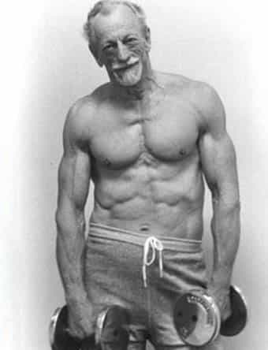

Time comes for all of us, regardless of who you are or what your status is. I would certainly hope that it’s not a controversial opinion that nobody escapes from the ravages of age. Simply put, everybody is going to get older, unless you deign for whatever reason to die right now—and frankly, I have no desire to be blamed for a suicide epidemic so please don’t do this.
Jokes aside, what will be sort of difficult for many physical culturists to grasp is that your body will get weaker and less able once you get beyond a certain point in age. This is especially difficult for those who were born weak and feeble and have continuously built their strength, stamina, and ability throughout their lives in a never-ending physical “prime”—and that includes myself.
However, just because your physical capabilities will inevitably be somewhat diminished with age, that does not mean that you have to stop exercising entirely once you get beyond the age of 30 or so. The “dad bod” is a real phenomenon, but it doesn’t necessarily have to be.
Why The Decline?
Before we can discuss how to slow the ravages of age, we should first discuss what those afflictions are: simply put, as a person gets older, the human body will undergo many changes that will adversely affect the person, in particular the stiffening of blood vessels and the slowing of its production of the sex-determining hormones, amongst other things.
For men, this will lead to a decrease in fertility, decrease of muscle mass and bone density, and increase in body fat, in addition to a decrease in one’s cardiovascular and muscular endurance.
All of these bodily changes will sneak up on the unsuspecting man and hit him all at once, and they’ll only continue as the years go on. Faced with such a sudden decrease in physical capabilities, the average man will relax more and exercise less and pretty soon you’ll wake up with the dreaded dad bod pictured above.
What Can Be Done?
Simply put, what you have to do to slow the aging process is continue exercising. That statement is, of course, blindingly obvious, so I feel that a greater degree of explanation is required.
We can begin by looking at the main afflictions of age, and how exercise can affect those:
1. The Loss of Bone Density
As one ages, your bones become thinner and weaker—this is hardly something that can be disputed, and the increasing likelihood of bone disorders such as osteopenia and osteoporosis can speak to that.
As luck would have it, in addition to “getting swole”, heavy resistance training has also been documented to strengthen the bones and other connective tissues of the body. Thus, even mainstream doctors—the better ones at least—will advise elderly patients to do some sort of resistance training.
As for what sorts of resistance training you should do, I would recommend doing the exact same sort of resistance training that a young man does, just with reduced weight and repetitions. Whether you are a young man or an old man, proper form is the key, and should you be using proper form in your lifting, you will avoid injury and repetitive stress, whether you are 20 or 80.
2. Strength Loss
While athletes often say that your strength is the last thing to go (certainly it goes after endurance), it will eventually go, especially if the connective tissues are no longer conditioned. Thus, keeping your strength up as an old man is done in the exact manner as retaining your bone density: continuing your resistance training, combined with eating a nutrient rich diet.

3. Weight Gain
Along with the decrease in muscle mass and testosterone production, age is often associated with a slowing of metabolism and increased percentage of body fat. And, yet again, continuing a program of resistance training, whether it be weights or calisthenics, has been associated with increasing one’s natural testosterone levels.
Combine that with a sensible diet, and you’ll find yourself slowing or even reversing signs of aging, or at the very least becoming one hell of a silver fox

4. Circulation
Leaving resistance training behind for now, cardio is also important for the older person—arteriosclerosis, a stiffening of the blood vessels, is a natural process with age. To increase your circulation, you can perform any sort of exercise that gets your heart rate up, again bearing in mind to reduce the intensity for considerations of age. This can range from traditional cardio, to circuit training, to even traditional strength training which will give you a small secondary benefit of cardiovascular training.
If you are a retiree, you likely have more free time than a younger man, but even if that is the case, I would still recommend doing the fundamental compound lifts and calisthenic moves. I certainly plan on continuing fitness as I get older, and all of you should as well.
Read More: A Brief Guide To Fitness After 40